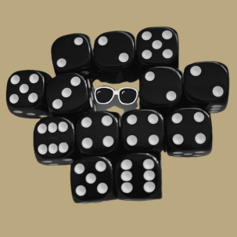

Würfelspiel Hammer-Roulette
Das Spiel stammt von Peter Hammer (s. auch Rätsel des Monats)
Im Gegensatz zum russischen Roulette wird beim Hammer-Roulette ein Gewinner und nicht ein Verlierer ermittelt.

the missing one
Ziel des Spiels: Mit n Würfeln alle sechs Ziffern ( 1 – 6 ) zu werfen! Somit fehlt in der Abbildung bei den 13 Würfeln «nur» die Eins.
Ablauf Es gilt stets: Wer eine Offerte annimmt, darf würfeln. Erreicht er das Ziel, ist das Spiel beendet. Scheitert er,
kommt er auf die Warteliste. Das Spiel beginnt mit einer Offerte von sechs Würfeln, um das Ziel «alle sechs» zu erreichen.
Nach dem Start folgen der Reihe nach Offerten mit sieben, acht, neun, … Würfel.
Wollen gleichzeitig zwei Spieler eine Offerte annehmen, so wird durch den Würfel ermittelt, wer den Vorzug erhält. Es gilt stets,
wird das Ziel nicht erreicht, erfolgen weitere Offerten für die verbleibenden Spieler. Nimmt der zweitletzte der restlichen Teilnehmer
ein Angebot an – zum Beispiel 13 Würfel – und scheitert ebenfalls, so muss der letzte der Verbliebenen das folgende Angebot – in unserem
Beispiel 14 Würfel – annehmen.
Lässt das Würfelglück auch diesen Spieler im Stich, wird das Prozedere fortgesetzt mit dem Spieler, der das Wurfspiel eröffnete. Dabei
wird laufend die Offerte um einen Würfel erhöht, bis einer die erstrebenswerte «Strasse» erreicht hat.
Beispiel
6 Würfel A , B , C und D verzichten.
7 Würfel A nimmt die Offerte an, würfelt und scheitert.
8 Würfel B , C und D verzichten.
9 Würfel C und D nehmen die Offerte an. C würfelt eine 5 gewinnt das Duell gegen D, der eine 4 würfelt.
C darf mit 9 Würfeln spielen, scheitert aber.
10 Würfel D muss diese Offerte annehmen und scheitert.
11 Würfel B ( als Letzter ) muss diese Offerte annehmen. Aber auch er scheitert.
12 Würfel A, der diese Offerte annehmen muss, würfelt mit 12 Würfeln und hat Erfolg. Er gewinnt diese Runde!
Simulation zum "Würfeln bis alle 6 Ziffern gewürfelt"
©1997 - 2026 www.mathematik.ch |🔍